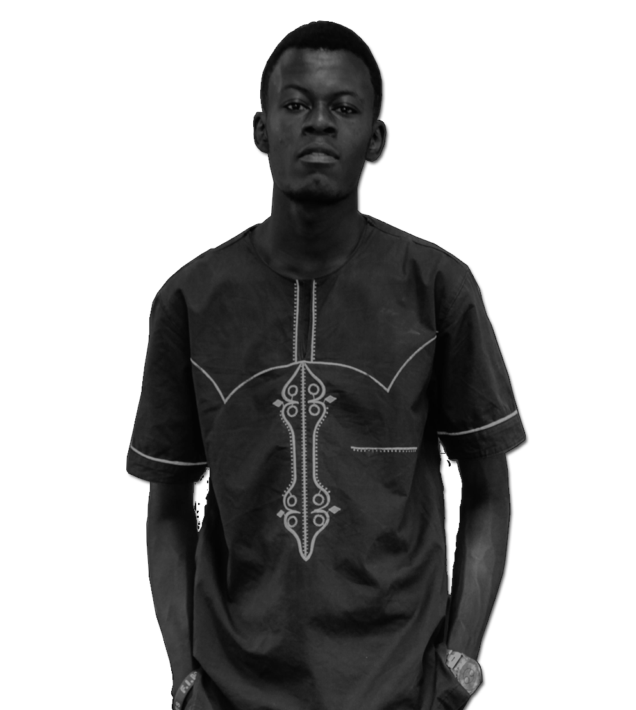

Peniel Dialu WiFi
Web Developer
Qui suis-je ?
Je m'appel Peniel DIALUNDAMA, surnomé WiFi
J’ai toujours été passionné par l’informatique en général, en fait je suis tombé dedans petit. Mon premier ordinateur était un HP, sur lequel j'utilisais pour jouer à des jeux vidéos pour pc .Puis au collège, avec mon premier PC, je bidouillais sur la maintenance des ordinateurs des potes et des personnes du quartier.
En partant étudier à l’université, je savais juste que je voulais être dans le milieu de l’informatique, et cela englobe tellement de métiers différents, que je ne savais pas vraiment où j’allais atterrir. A un moment je voulais être ingénieur en maintenance informatique. Mais au gré des rencontres et lorsque je découvre la logique de programmation, je me suis retrouvé dans l’univers du web.
Aujourd’hui je suis apprenant à la Kinshasa Digital Academy et je fais mon métier par passion et parce que j’aime concevoir des choses, et autant qu’elles soient utiles et résolvent des problèmes !
Mon parcours
2020
FORMATION DEVELOPPEUR WEB
KINSHASA DIGITAL ACADEMY
2016 - 2019
GRADUAT
INFORMATIQUE INDUSTRIELLE ET RESEAUX
ISPT-KIN
2015 – 2016
PREPARATOIRE
ISPT-KIN
2010 - 2015
HUMANITE
ELECTRONIQUE INDUSTRIEL
ITI MASINA
2008 - 2010
SECONDAIRE
COLLEGE BONSOMI
2003 - 2008
PRIMAIRE
EP1 N'DJILI